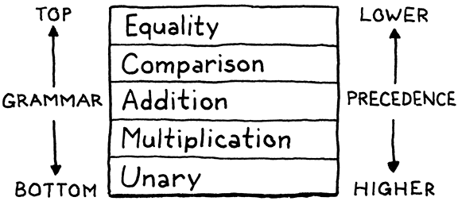

《Crafting Interpreters》读书笔记（第 1-10 章）
这本《Crafting Interpreters》实际上几年前就发现并且收藏了，直到昨天看了作者 Robert Nystrom 的博客后才想起来。Robert 去年刚过而立之年，目前在 Google 从事 Dart 语言的研发工作。我对好书没有抵抗力，立马放下手头的其他书和项目，来感受一下优秀人的文字魅力。后记：如果龙书是编译入门的理论圣经，那这本书就是编译入门的实践宝典，好书。
Lox Grammer
The syntactic grammar is used to parse the linear sequence of tokens into the nested syntax tree structure. It starts with the first rule that matches an entire Lox program (or a single REPL entry).
program → declaration* EOF ;
Declarations
A program is a series of declarations, which are:
- The statements that bind new identifiers or,
- Any of the other statement types.
And the declarations are not allowed directly inside control flow statements.
declaration → classDecl
| funDecl
| varDecl
| statement ;
classDecl → "class" IDENTIFIER ( "<" IDENTIFIER )?
"{" function* "}" ;
funDecl → "fun" function ;
varDecl → "var" IDENTIFIER ( "=" expression )? ";" ;
Statements
The remaining statement rules produce side effects, but do not introduce bindings. Note that block is a statement rule, but is also used as a nonterminal in a couple of other rules for things like function bodies.
statement → exprStmt
| forStmt
| ifStmt
| printStmt
| returnStmt
| whileStmt
| block ;
exprStmt → expression ";" ;
forStmt → "for" "(" ( varDecl | exprStmt | ";" )
expression? ";"
expression? ")" statement ;
ifStmt → "if" "(" expression ")" statement
( "else" statement )? ;
printStmt → "print" expression ";" ;
returnStmt → "return" expression? ";" ;
whileStmt → "while" "(" expression ")" statement ;
block → "{" declaration* "}" ;
Expressions
Expressions produce values. Lox has a number of unary and binary operators with different levels of precedence. Some grammars for languages do not directly encode the precedence relationships and specify that elsewhere. Here, we use a separate rule for each precedence level to make it explicit.
expression → assignment ;
assignment → ( call "." )? IDENTIFIER "=" assignment
| logic_or ;
logic_or → logic_and ( "or" logic_and )* ;
logic_and → equality ( "and" equality )* ;
equality → comparison ( ( "!=" | "==" ) comparison )* ;
comparison → term ( ( ">" | ">=" | "<" | "<=" ) term )* ;
term → factor ( ( "-" | "+" ) factor )* ;
factor → unary ( ( "/" | "*" ) unary )* ;
unary → ( "!" | "-" ) unary | call ;
call → primary ( "(" arguments? ")" | "." IDENTIFIER )* ;
primary → "true" | "false" | "nil" | "this"
| NUMBER | STRING | IDENTIFIER | "(" expression ")"
| "super" "." IDENTIFIER ;
Utility rules
In order to keep the above rules a little cleaner, some of the grammar is split out into a few reused helper rules.
function → IDENTIFIER "(" parameters? ")" block ;
parameters → IDENTIFIER ( "," IDENTIFIER )* ;
arguments → expression ( "," expression )* ;
Chapter 1 - Introduction
- self-hosting (自举): implement a compiler in the same language it compiles.
Chapter 2 - A Map of the Territory
- 编译器实现路径全景：
- Scanning (lexing): takes in the linear stream of characters and chunks them together into tokens (.e.g: “(“, “123”, “min”).
- Parsing: takes the flat sequence of tokens and builds a tree structure (AST) that mirrors the nested nature of the grammar.
- Static Analysis: identifier resolution, type check, and etc. The extra information could be stored as attributes on the AST, or in a separate symbol table.
- Intermediate Representations (IR): a few well-established styles of IRs out there, .e.g: “control flow graph”, “static single-assignment”, “continuation-passing style”, and “three-address code”.
- Optimization: “constant propagation”, “common subexpression elimination”, “loop invariant code motion”, “global value numbering”, “strength reduction”, “scalar replacement of aggregates”, “dead code elimination”, and “loop unrolling”, and etc.
- Code Generation: generate code for a real CPU or a virtual one?
- Virtual Machine: a program that emulates a hypothetical chip supporting your virtual architecture at runtime.
- Runtime: provide services like GC, reflection. In a fully compiled language, the code implementing the runtime gets inserted directly into the resulting executable. In, say, Go, each compiled application has its own copy of Go’s runtime directly embedded in it. If the language is run inside an interpreter or VM, then the runtime lives there, .e.g Java, Python, and JS.
Chapter 3 - The Lox Language
- An expression’s main job is to produce a value, a statement’s job is to produce an effect. An expression followed by a semicolon (;) promotes the expression to statement-hood.
- first class members: it means they are real values that you can get a reference to, store in variables, pass around, etc.
- Approaches of achieving object:
- Class: two core concepts of “instances” and “classes”. To call a method on an instance, there is always a level of indirection. You look up the instance’s class and then you find the method there.
- Instances store the state for each object and have a reference to the instance’s class.
- Classes contain the methods and inheritance chain.
- Prototype: more fundamental, only objects, and each individual object may contain state and methods. Objects can directly inherit from (delegate to) each other.
Chapter 4 - Scanning
- Lexeme + meta-data => token.
- Lexeme: the raw substrings of the source code (.e.g: “var”, “=”, “;”).
- Meta-data: token type, literal value, location information (line, column, and length), and etc.
- Lexical grammar: determine how a particular language groups characters into lexemes, the rule is also called “regular languages“ (which could be defined by a regular expression).
- “Maximal munch” principle: when two lexical grammar rules can both match a chunk of code that the scanner is looking at, whichever one matches the most characters wins.
// For below C code, "-" and "--" are both valid lexical grammar rules, -
// but only the last one is the correct scanning result.
---a => - --a; // ✗
---a => -- -a; // ✓
- CFL (Context-free Language): is a language generated by a context-free grammar (CFG). The set of all context-free languages is identical to the set of languages accepted by pushdown automata, which makes these languages amenable to parsing. Further, for a given CFG, there is a direct way to produce a pushdown automaton for the grammar (and thereby the corresponding language), though going the other way (producing a grammar given an automaton) is not as direct. Python is not a pure CFL since CF grammars cannot express the rules of INDENT/DEDENT.
- Formal grammar: it takes a set of atomic pieces it calls its “alphabet”. Then it defines a (usually infinite) set of “strings” that are “in” the grammar. Each string is a sequence of “letters” in the alphabet. It’s job is to specify which strings are valid and which aren’t.
| Terminology | Lexical grammar | Syntactic grammar |
|---|---|---|
| The “alphabet” is … | Characters | Tokens |
| A “string” is … | Lexeme or token | Expression |
| It’s implemented by the … | Scanner | Parser |
Chapter 5 - Representing Code
- BNF (Backus–Naur Form): a metasyntax notation for context-free grammars.
expression → literal
| unary
| binary
| grouping ;
literal → NUMBER | STRING | "true" | "false" | "nil" ;
grouping → "(" expression ")" ;
unary → ( "-" | "!" ) expression ;
binary → expression operator expression ;
operator → "==" | "!=" | "<" | "<=" | ">" | ">="
| "+" | "-" | "*" | "/" ;
- Production (产生式): the rewrite rules that produce “string” from the CFG. It inlcudes a head (name), and a body (describes what it generates, usually a list of symbols).
- Symbol (符号):
- Terminal (终结符): a letter from the grammar’s alphabet, like a literal value, are quoted strings.
- Nonterminal (非终结符): a named reference to another rule in the grammar, they are replaced by groups of terminal symbols according to the production rules, they are lowercase words.
- In a parsed AST tree, every single grammar production becomes a node in the tree. An AST elides productions that aren’t needed by later phases.
- Recursion in the grammar is a good sign that the language being defined is context-free instead of regular. In particular, recursion where the recursive nonterminal has productions on both sides implies that the language is not regular.
- Chomsky Hierarchy:
| Grammar | Languages | Recongnizing Automation |
|---|---|---|
| Type-3 | Regular | Finite state automaton |
| Type-2 | Context-free | Non-deterministic pushdown automaton |
| Type-1 | Context-sensitive | Linear-bounded non-deterministic Turing machine |
| Type-0 | Recursively enumerable | Turing machine |
- Visitor pattern: approximating the functional style within an OOP language. We can define all of the behavior for a new operation on a set of types in one place, without having to touch the types themselves. It does this by adding a layer of indirection. So, it would be better to use it to traverse the AST nodes.

Chapter 6 - Parsing Expressions
- Precedence: determines which operator is evaluated first in an expression containing a mixture of different operators.
- Associativity: determines which operator is evaluated first in a series of the same operator. When an operator is left-associative (think “left-to-right”), operators on the left evaluate before those on the right. Likewise, some operators are non-associative. That means it’s an error to use that operator more than once in a sequence. For example, Perl’s range operator isn’t associative, so
a .. bis OK, buta .. b .. cis an error.
"5 - 3 - 1" <=> "(5 - 3) - 1"
"a = b = c" <=> "a = (b = c)"
- BNF grammer with precedence (lowest -> highest, separated into each line of rules) and associativity:
expression → equality ;
equality → comparison ( ( "!=" | "==" ) comparison )* ;
comparison → term ( ( ">" | ">=" | "<" | "<=" ) term )* ;
term → factor ( ( "-" | "+" ) factor )* ;
factor → unary ( ( "/" | "*" ) unary )* ;
unary → ( "!" | "-" ) unary
| primary ;
primary → NUMBER | STRING | "true" | "false" | "nil" | "(" expression ")" ;
- Each rule needs to match expressions at that precedence level or higher.
- Avoid having “left-recursive” in the BNF grammar for certain implementation algorithms (recursion -> iteration).
factor → factor ( "/" | "*" ) unary
| unary ;
factor → unary ( ( "/" | "*" ) unary )* ;
- “Recursive Descent” parsing (递归下降):
- It’s a top-down parser, it starts from the top or outermost grammar rule (.e.g expression) and works its way down into the nested subexpressions before finally reaching the leaves of the syntax tree. This is in contrast with bottom-up parsers like LR that start with primary expressions and compose them into larger and larger chunks of syntax.

- A recursive descent parser is a literal translation of the grammar’s rules straight into imperative code. Each rule becomes a function, and it produces a syntax tree for that rule and returns it to the caller. When the body of the rule contains a nonterminal — “a reference to another rule”, we call that other rule’s method.
| Grammar notation | Code representation |
|---|---|
| Terminal | Code to match and consume a token |
| Nonterminal | Call to that rule’s function |
| | | if or switch statement |
| * or + | while or for loop |
| ? | if statement |
- It is possible to define a more complex grammar that’s difficult to parse using recursive descent. Predictive parsing gets tricky when you may need to look ahead a large number of tokens to figure out what you’re sitting on. If you can parse C++ using recursive descent — which many C++ compilers do, you can parse anything.
- A decent parser should:
- Detect and report the error.
- Avoid crashing or hanging.
- Be fast.
- Report as many distinct errors as there are.
- Minimize cascaded errors.
Panic mode (a wey of error recovery): as soon as the parser detects an error, it enters panic mode. It knows at least one token doesn’t make sense given its current state in the middle of some stack of grammar productions. Before it can get back to parsing, it needs to get its state and the sequence of forthcoming tokens aligned such that the next token does match the rule being parsed. This process is called synchronization (the traditional place in the grammar to synchronize is between statements). The parser fixes its parsing state by jumping out of any nested productions until it gets back to that rule. Then it synchronizes the token stream by discarding tokens until it reaches one that can appear at that point in the rule.
Error productions (a way of error recovery): augment the grammar with a rule that successfully matches the erroneous syntax. The parser safely parses it but then reports it as an error instead of producing a syntax tree.
Chapter 7 - Evaluating Expressions
- The leaves of an expression tree, the atomic bits of syntax that all other expressions are composed of, are literals. A literal is a bit of syntax that produces a value, literal always appears somewhere in the user’s source code. The literal values should be parsed into runtime values in the interpreter implementation.
- Runtime errors are failures that the language semantics demand we detect and report while the program is running.
- If designing a statically typed language, keep in mind that we can sometimes give users more flexibility without sacrificing too many of the benefits of static safety by deferring some type checks until runtime (.e.g: casting). A key reason users choose statically typed languages is because of the confidence the language gives them that certain kinds of errors can never occur when their program is run. Defer too many type checks until runtime, and you erode that confidence.
Chapter 8 - Statements and State
- Expression statement: lets you place an expression where a statement is expected. They exist to evaluate expressions that have side effects. Any time you see a function or method call followed by a ;, you’re looking at an expression statement.
- Statement BNF grammer:
program → statement* EOF ;
statement → exprStmt
| printStmt ;
exprStmt → expression ";" ;
printStmt → "print" expression ";" ;
- Variable:
- Some places where a statement is allowed, like inside a block or at the top level, allow any kind of statement, including declarations. Others allow only the “higher” precedence statements that don’t declare names.
if (monday) print "Ugh, already?"; // Allowed ✓
if (monday) var beverage = "espresso"; // Disallowed ✗
- To accommodate the above distinction, we can add another rule for kinds of statements that declare names. Any place where a declaration is allowed also allows non-declaring statements. Also, to access a variable, we define a new kind of primary expression. See BNF grammer below:
program → declaration* EOF ;
declaration → varDecl
| statement ;
varDecl → "var" IDENTIFIER ( "=" expression )? ";" ;
( ... )
primary → "true" | "false" | "nil"
| NUMBER | STRING
| "(" expression ")"
| IDENTIFIER ;
- The bindings that associate variables to values need to be stored in an environment. We can use the same implementation technique for all variables (local + global), building a chain of environments, one for each scope, all the way up to the top (global).
A rule about variables and scoping is: “When in doubt, do what Scheme does”. One of the main goals of Scheme was to introduce lexical scoping to the world, so it’s hard to go wrong if you follow in their footsteps.
Some statically typed languages like Java and C# specify that the top level of a program isn’t a sequence of imperative statements. Instead, a program is a set of declarations which all come into being simultaneously. The implementation declares all of the names before looking at the bodies of any of the functions. Older languages like C and Pascal don’t work like this. Instead, they force you to add explicit forward declarations to declare a name before it’s fully defined. That was a concession to the limited computing power at the time. They wanted to be able to compile a source file in one single pass through the text, so those compilers couldn’t gather up all of the declarations first before processing function bodies.
Assignment:
expression → assignment ;
assignment → IDENTIFIER "=" assignment
| equality ;
- Mostly, assignment is an expression and not a statement.
- As in C, it is the lowest precedence expression form.
- Distinguish r-value and l-value: a r-value could be evaluated, and an l-value “evaluates” to a storage location that you can assign into. And the syntax tree needs to reflect that an l-value isn’t evaluated like a normal expression.
- Every valid assignment target happens to also be valid syntax as a normal expression. We can parse the left-hand side as if it were an expression and then after the fact produce a syntax tree that turns it into an assignment target. If the left-hand side expression isn’t a valid assignment target, we fail with a syntax error.
// Valid expression on the left side.
newPoint(x + 2, 0).y = 3; // Assignment.
newPoint(x + 2, 0).y; // Get the expression value.
- Lexical scope (static scope): a specific style of scoping where the text of the program itself shows where a scope begins and ends. In contrast to dynamic scope, where you don’t know what a name refers to until you execute the code.
- Block syntax:
statement → exprStmt
| printStmt
| block
block → "{" declaration* "}" ;
- We can implement this by defining a fresh environment for each block containing only the variables defined in that scope. When we exit the block, we discard its environment and restore the previous one. Also, we need to chain the environments together. Each environment has a reference to the environment of the immediately enclosing scope. When we look up a variable, we walk that chain from innermost out until we find the variable. Starting at the inner scope is how we make local variables shadow outer ones (it forms a “parent-pointer tree“).

- Manually changing and restoring a mutable environment field feels inelegant. Another classic approach is to explicitly pass the environment as a parameter to each visit method. To “change” the environment, you pass a different one as you recurse down the tree. You don’t have to restore the old one, since the new one lives on the stack and is implicitly discarded when the interpreter returns from the block’s visit method.
- Implicit variable declaration: some languages collapse declaring a new variable and assigning to an existing one to only assignment syntax. Assigning to a non-existent variable automatically brings it into being. It made sense in years past when most scripting languages were heavily imperative and code was pretty flat.
Chapter 9 - Control Flow
- Russell’s paradox: initially, set theory allowed you to define any sort of set. If you could describe it in English, it was valid. Naturally, given mathematicians’ predilection for self-reference, sets can contain other sets. So Russell came up with:
R is the set of all sets that do not contain themselves.
So, does R contain itself? If it doesn’t, then according to the second half of the definition it should. But if it does, then it no longer meets the definition. Cue mind exploding.
- Turing-complete: language is expressive enough to be a turing machine, it basically need arithmetic, a little control flow, and the ability to allocate and use (theoretically) arbitrary amounts of memory. Turing machine is equivalent to Church’s “lambda calculus” in power.
- Branching:
statement → exprStmt
| ifStmt
| printStmt
| block ;
ifStmt → "if" "(" expression ")" statement
( "else" statement )? ;
- Dangling else: a problem in programming of parser generators in which an optional else clause in an if–then(–else) statement results in nested conditionals being ambiguous. Formally, the reference context-free grammar of the language is ambiguous, meaning there is more than one correct parse tree. Instead, most languages and parsers avoid the problem in an ad hoc way. No matter what hack they use to get themselves out of the trouble, they always choose the same interpretation - the else is bound to the nearest if that precedes it.
- Logical Operators:
expression → assignment ;
assignment → IDENTIFIER "=" assignment
| logic_or ;
logic_or → logic_and ( "or" logic_and )* ;
logic_and → equality ( "and" equality )* ;
- “logic_or” and “logic_and” don’t have the same precedence, the precedence of “logic_and” is higher than “logic_or”. “And” is often seen as the multiplication in Boole’s algebra, and “Or” is seen as the addition, which is why they commonly inherit the precedance of their namesakes.
- The syntax itself doesn’t care that they short-circuit which is a semantic concern, should be handled at runtime.
- Loops:
statement → exprStmt
| forStmt
| ifStmt
| printStmt
| whileStmt
| block ;
whileStmt → "while" "(" expression ")" statement ;
forStmt → "for" "(" ( varDecl | exprStmt | ";" )
expression? ";"
expression? ")" statement ;
- Syntactic sugar: making some common code patterns more pleasant to write.
- “forStmt” could be implemented as a syntactic sugar of “whileStmt”.
- Desugaring: a process where the front end takes code using syntax sugar and translates it to a more primitive form that the back end already knows how to execute.
Chapter 10 - Functions
- Function Calls:
- The name of the function being called - the callee, can be any expression that evaluates to a function (compared to Pascal, only named functions or functions stored directly in variables can be called).
- The call operator “()” has higher precedence than any other operator, BNF grammar as below:
unary → ( "!" | "-" ) unary | call ;
call → primary ( "(" arguments? ")" )* ;
arguments → expression ( "," expression )* ;
- Native functions (primitives, external functions, foreign functions): functions that the interpreter exposes to user code but that are implemented in the host language, not the language being implemented.
- Lisp-1: refer to languages like Scheme that put functions and variables in the same namespace.
- Lisp-2: for languages like Common Lisp that partition them.
- Currying: the normal way of defining a function that takes multiple arguments is as a series of nested functions. Each function takes one argument and returns a new function. That function consumes the next argument, returns yet another function, and so on. Eventually, once all of the arguments are consumed, the last function completes the operation.
- Function Declarations:
funDecl → "fun" function ;
function → IDENTIFIER "(" parameters? ")" block ;
parameters → IDENTIFIER ( "," IDENTIFIER )* ;
- A named function declaration isn’t really a single primitive operation. It’s syntactic sugar for two distinct steps (anonymous functions + assignment):
- Creating a new function object.
- Binding a new variable to it.
- Each function call gets its own environment where it stores those variables.
- Return Statements:
returnStmt → "return" expression? ";" ;
- Each function call should return something (implicit
nilor other valuable data), even if it contains no return statements at all. - It could be implemented simply by Exception (unwinding the visited call).
文章评论（Utterances）